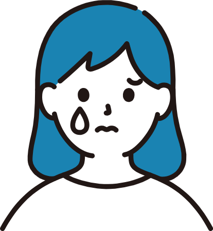
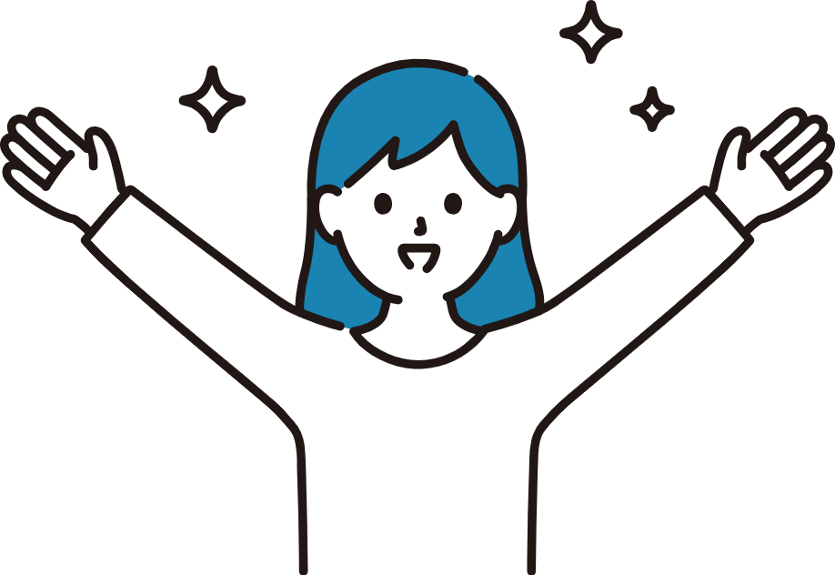

Feature
特徴
-
目的
聴覚障がい者に対するネガティブなイメージを払拭。
-
ターゲット
聴覚障がい者と関りがある方
-
制作期間
2022年6月～7月
-
使用ツール
XD/Dreamweaver/Illustrator/Photoshop
-
使用言語
HTML/CSS/Javascript
Process
過程
01 課題
-

障がい者に対する無意識な偏見
「障がい者」という言葉を聞くと、「かわいそうな人」や「普通ではない人」など無意識な偏見を持ってしまうことがあります。
02 解決
-

聴覚障がい者に対するネガティブなイメージを払拭
ネガティブなイメージからポジティブなイメージに変換させることをコンセプトにしました。 「障がい者」ではなく、「一人の人間」として見てもらいたいと考え、真面目な内容とユーモアのある内容を紹介しました。
Point
要点
01 デザイン
配色
このサイトの目的である真面目＋ユーモアを表現するために、知性の水色と活発な黄色の２色をイメージカラーにしました。
ロゴマーク
聴覚障がい者にとって魔法の用具である「補聴器」と「人工内耳」をモチーフにしました。 人工内耳は補聴器の認知度に比べて低い傾向がありました。そのため、人工内耳の認知度向上も含め、 「補聴器」と「人工内耳」を組み合わせたロゴマークとユーザーの印象に残るデザインにしました。
02 リアルな声を集めるためにアンケート調査を実施
聴覚障がい者たちのリアルな声を知るために、中学生から大学生の聴覚障がい者対象でアンケートのご協力をいただきました。 内容は、日常生活や困ったことや将来こんなものがあったらいいな、ろう者あるあるをイラストにまとめて紹介しています。